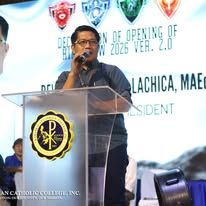

Guidance, Teaching, and Support
Faculty members and college personnel play an important role in supporting learning, student development, and campus life.
For the current faculty directory, office assignments, consultation schedules, or official biographies, please contact the college directly.
**Visit our campus to learn more about our teachers and faculty members, including their names and positions.**
Contact the College
